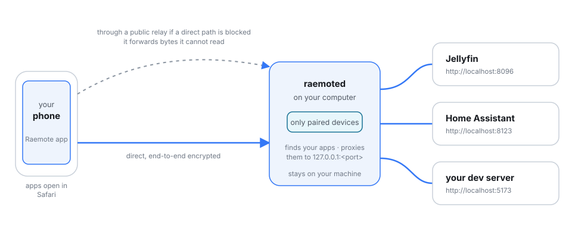
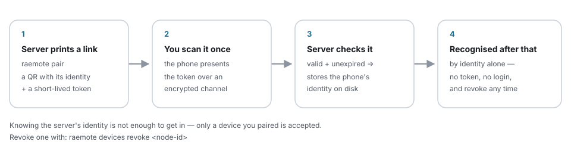

Your self-hosted apps, on your phone.
Install Raemote on your computer. Scan a QR code with your phone. Jellyfin, Home Assistant, dashboards and dev servers are now on your phone — end-to-end encrypted, with no account, no VPN and no port forwarding.
- No account
- No port forwarding
- End-to-end encrypted
- Direct when possible, relayed when needed
- Open source, AGPL-3.0
Three steps
Install. Scan. Done.
-
Install on your computer
One command on macOS or Linux. It installs a small background service that finds the web apps you already run.
-
Scan the QR code
Run
raemote pairand scan it with the Raemote app. The link is short-lived and can pair more than one device until it expires. -
Open an app
Your apps appear as a list. Tap one and it opens in Safari, logged in exactly as it is at home.
curl -fsSL https://github.com/raemote/raemote_cli/raw/main/install.sh | shPrefer the Gitee mirror on networks where GitHub is slow:
curl -fsSL https://gitee.com/pppkin/raemote_cli/raw/main/install.sh | sh
Features
What Raemote does for you
-
Discovery
It finds your apps
Raemote reads the machine's list of listening sockets — no port scanning, no configuration — and gives each web app a name from its page title. New apps show up on their own.
-
The phone app
Real apps in real Safari
Apps open in the system browser view, each on its own stable origin, so logins, cookies and local storage survive closing the app and coming back days later.
-
The phone app
Several apps at once
Open apps stay running as background tabs. Switching between them is instant and keeps the page exactly where you left it.
-
Connection
Encrypted, direct when possible
Your phone talks straight to your computer when the network allows it. When it doesn't, a public relay forwards the traffic without being able to read a byte of it.
-
Connection
Works on awkward networks
An outbound HTTP proxy is a supported option for networks that block the usual paths — so Raemote still works on hotel, campus or corporate Wi-Fi.
-
Control
You decide who is in
List paired devices, give them readable names, revoke any of them instantly, and invite a new device with a one-time code — from the app or the command line.
-
Laptop
No phone? Use a browser
raemote connectpairs this machine and serves the same app list on127.0.0.1, proxied over the same encrypted tunnel. Handy for testing and for laptops. -
Operate
Made to be checked
raemote doctorhealth-checks the daemon, permissions, config, discovery and relay.raemote logsshows what happened. The service is managed by launchd or systemd. -
Trust
Open source, AGPL-3.0
Raemote runs inside your home and holds keys to your private services, so the server and the app are public and auditable. Read the code, or the threat model.
How it works
Two pieces, one private connection
A small server, raemoted, runs on the computer that
holds your apps. The Raemote app on your phone shows what it found and opens
them. There is no account and no cloud service in the middle.

Under the hood
The connection is iroh over QUIC: peers find each other and try to connect directly, and a public relay is used only when a direct path is not available. The traffic is end-to-end encrypted either way.
Two application protocols run over it. raemote/bind/0 exists
only to pair a device with a short-lived token; raemote/0 serves
the small HTTP API (/_hub/catalog, /_hub/info,
/_hub/devices, /_hub/discover) and reverse-proxies
/app/<name>/… to the app's real address.
On the app's side, a loopback proxy gives each app its own origin and a per-launch secret, so nothing else on the phone can reach it. Requests are streamed — bodies, uploads, server-sent events and WebSockets all pass through untouched.
Trust
Only devices you paired get in
Pairing happens once. After that, your phone is recognised by its cryptographic identity — there is nothing to log in to and no token to keep safe.

- Paired identities are stored on the server; a lost phone is revoked in one command.
- Failed pairing attempts lock the token out; tokens expire on their own.
- Nothing is published to the public internet — apps are reachable only from paired devices.
- Everything the server does is in the threat model, in public.
Try it without a phone
Browse your apps from a laptop
The same tunnel, from a browser on the machine itself:
raemote connect # reopen the last server
raemote connect '<link from raemote pair>'It serves the app list on 127.0.0.1:7788 and gives
every app its own loopback port, so apps behave exactly as they do on the
server.
Honesty first
What Raemote does not do
- It does not put your apps on the public internet.
- It does not replace an app's own login — you still sign in to each app.
- It does not protect a phone that is already compromised.
- It is not a VPN, a remote desktop or a general network gateway.
- It does not work for HTTPS-only apps yet.